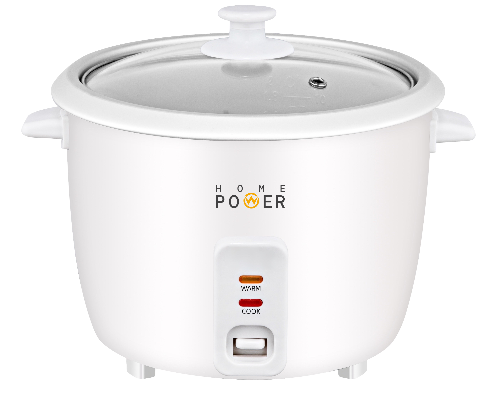

<!-- ANTES: Sin optimizar -->


<!-- DESPUÉS: Optimizado -->
<picture>
    <source srcset="media/images/products/ARROCERA.webp" type="image/webp">
    <source srcset="media/images/products/ARROCERA.jpg" type="image/jpeg">
    
</picture>

<!-- O más simple con WebP -->
